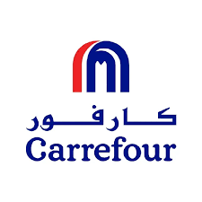
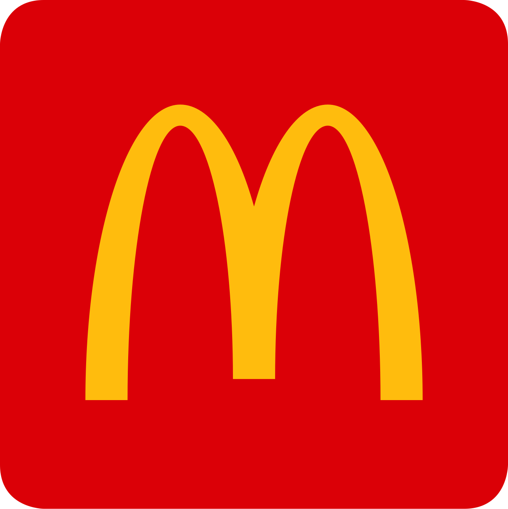
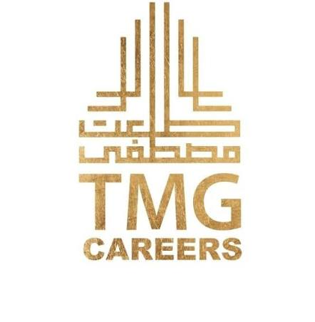
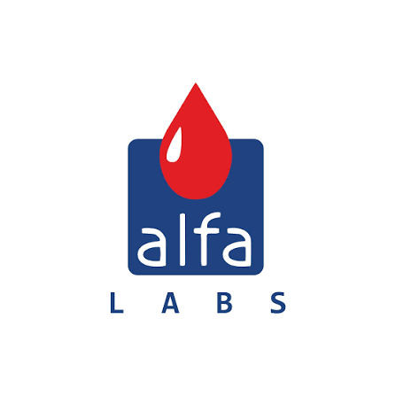
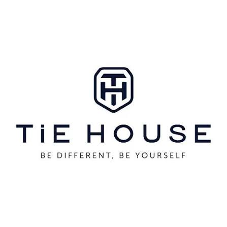
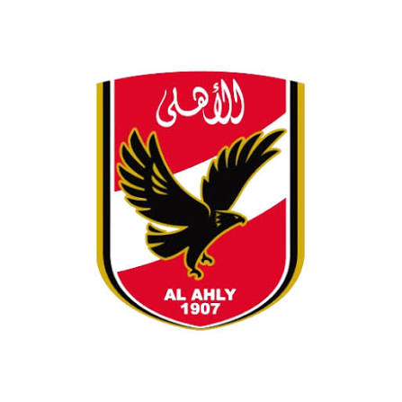
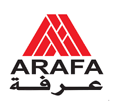
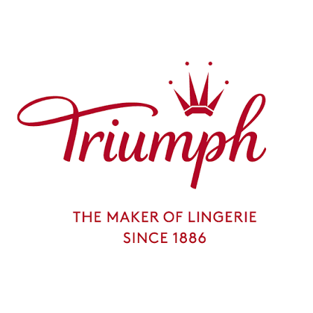
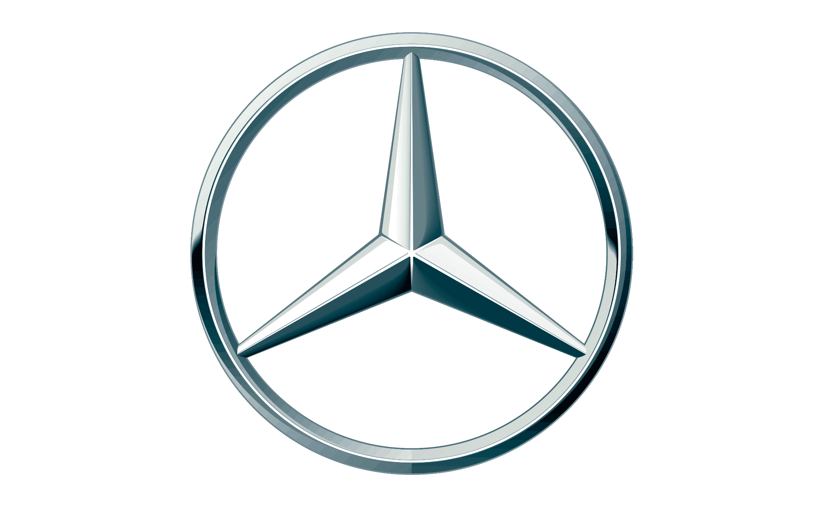

Brief & quotation
Share your design, tech pack, reference and estimated quantities.
A connected workflow for international buyers, private-label brands, retailers and sourcing teams.
Share your design, tech pack, reference and estimated quantities.
Confirm fabric specifications, trims and construction.
Develop and approve a sample before bulk manufacturing.
Cutting, sewing, printing and embroidery coordinated to the agreed program.
Inspect, finish, label and pack to buyer requirements.
Arrange FOB or door-to-door delivery, with responsibilities agreed in advance.
Fashionmill can coordinate international shipments, including FOB and door-to-door delivery. Freight, customs clearance, import duties and taxes are allocated according to the agreed quotation and delivery terms. Door-to-door does not automatically mean DDP.
Our experience includes export-market relationships across the Middle East, Europe, Asia and the United States.
The following logos appeared in the previously supplied Fashionmill portfolio and website assets. They are presented as portfolio references, not claims of current contracts or endorsements.









Share your tech pack, product references or a brief. We will discuss the right manufacturing approach for your program.
START AN RFQ ↗